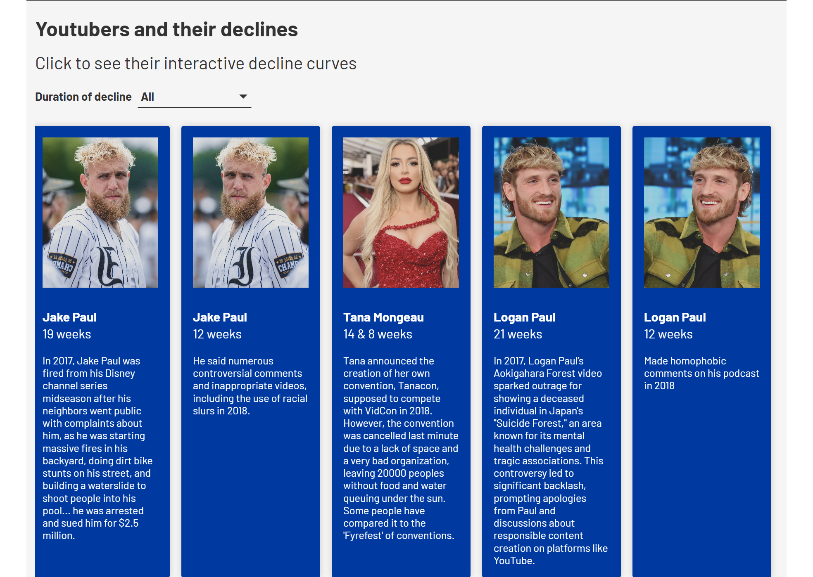

What is volatility
again a very finance-oriented paragraph, maybe paf and eliota can write stuff about how volatility is used in the world
of trading: paf's discussion of portfolios as a way to bring down volatility, etc. Say that there are two ways of
measuring volatility: historical volatility (standard deviation of returns over a period) and Parkinson's volatility
(based on high and low volatility). explain how Parkinson's volatility is more suited for our purpose because it
captures investor panic that might get resolved within the day, as can be the case in election days.
Also can have a dropdown menu with the formulas
Here we can show the graph of volatility over two decades, showing a rise in volatility around 2008 crisis.
Then, I want to talk about how to define the volatility of a sector, show two approaches: (1) volatility of
sector-specific ETF, (2) average volatility of all stocks in the sector. Show if the two are correlated and why and
which one we choose.
-> talk about the math and abnormal volatility
What's an event study methodology: how to define abnormal returns
Event studies
Introduction to event studies, how they are used in finance to measure the impact of specific events on stock prices.
Describe the concept then have a dropdown menu with formulas with abnormal returns, cumulative abnormal returns, etc.
I finish this text by mentioning how when using event studies, given that a US election is a rare event, we need to look
at multiple elections over time to get statistically significant results. This will tie nicely into the next section.
Timeline des elections :
J'aime beaucoup ce graph flourish mais (1) j'ai pas l'impression qu'il est assez long pour faire un truc qui scroll,
c'est un peu awkward comment ca scroll un peu puis ca s'arrete. genre je dirais ou les mettre tous d'un cote (en haut)
et faire que ca scroll ou garder comme ca mais du croup rapetir un peu et les montrer tous sans scrolling. (2) y'a pas
moyen de faire que la couleur de fond match le blanc. (3) je vois que y'a des bars rouges en haut de chaque candidat,
l'idée c'etati de mettre des bars rougs pour les republicains et bleus pour les democrates? (4) peut etre ecrire les
dates en mode "4 Novembre 2008"plutot que "4-11-2008" (5) vous voulez on fair un truc quand tu hover sur un des cercles
ca montre un carre avec un petit texte sur l'élection (genre il était contre qui, anything memorable de l'élection etc)
?
Presidential Impact

card graph from flourish with presidents heads and on click display the volatility before and after
elections like in the graph Elsa made
Impact of elections on volatility
graph Elsa election mais changer cumulative abnormal returns en volatility
Impact of elections on volatility
Here I show the graphs I do taht are based on volatility:
- Graph like the one elsa made but by volatility and you can pick the election you want to display the results for it.
- show which companies and which sectors are most impacted by elections in terms of volatility, bubble hierarchy graph
from flourish like the one in the youtube datastory
I then talk about statistical significance, I do paired t-tests to show that the volatility after elections is
significantly different from before elections. (calm before the storm)
which characteristics of elections impact volatility the most
we do a linear regression where the dependent variable is the change in Cumulative Abnormal Volatility before and after
the election and the independent variables are characteristics of the elections, like democrat vs republican win, margin
of victory, economic conditions at the time and sector. I let sector interact with the other variables so we can see
which sectors are more impacted by which characteristics of elections.
fine-grained IEM analysis for one election
I introduce what IEM is, how prediction markets work, how they reflect the beliefs of investors about the likelihood of
a candidate winning.
Then I show the analysis we did for one election (2020 or 2016), showing how as the IEM probabilities change over time,
how does the volatility of different sectors change.
If I have time I can do this for multiple elections.